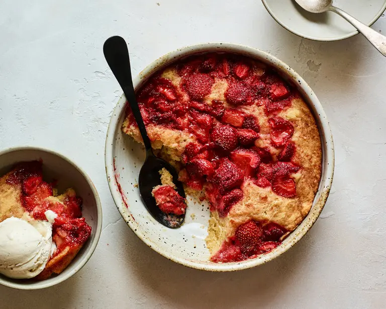

Strawberry Spoon Cake

This unfussy cake with a top layer of jammy strawberries is so gooey it’s best to serve the whole thing with a spoon. The batter comes together quickly with minimal effort, using basic pantry ingredients and a small handful of berries — frozen or fresh.
½ cupunsalted butter (1 stick, 113 grams)1 cupstrawberries, hulled and sliced (150 grams)⅔ cuplight brown sugar (150 grams)½ cupwhole milk, at room temp (120 ml)½ tspsalt1 cupall-purpose flour (130 grams)1 tspbaking powder- Vanilla ice cream, for serving
Heat oven to 350 degrees and grease an 8-inch (square or round) baking dish with butter. Set aside.
Using your hands or the back of a fork, mash the berries to release all their juices, and stir in ⅓ cup of the brown sugar. Set aside.
In a medium bowl, whisk together the melted butter, remaining ⅓ cup brown sugar, milk and salt, then add the flour and baking powder and continue whisking just until the batter is smooth. Transfer the batter (it’s not much) to the greased baking dish, and spread evenly into corners.
Spoon the strawberries and all their juices over the top of the cake batter. Place in the oven and bake for 25 minutes, or just when a toothpick comes out clean in the center. Remove from the oven and allow to cool for 3 to 5 minutes before spooning into bowls. Serve warm with ice cream.